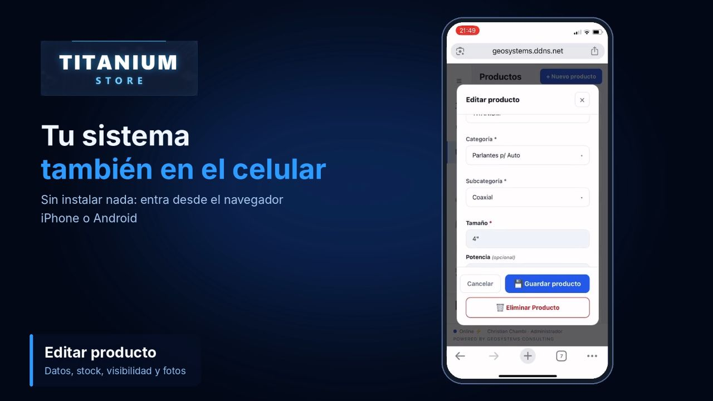

🏗️
Auditoría de Proyectos de Inversión Pública
Evaluación rigurosa del avance físico-financiero y del cumplimiento de convenios de financiamiento en obras de gran envergadura para ministerios y gobiernos autónomos municipales.
VIPFEGAMLey 1178
Garantizamos transparencia, legalidad y solidez tecnológica. Combinamos auditoría estratégica bajo el marco normativo boliviano con administración experta de bases de datos y migración de sistemas para el sector público y privado.
Evaluación rigurosa del avance físico-financiero y del cumplimiento de convenios de financiamiento en obras de gran envergadura para ministerios y gobiernos autónomos municipales.
Evaluaciones anuales bajo el marco de la Ley 1178 exigidas por la Contraloría General del Estado para entidades del sector público.
Investigación especializada para detectar fraudes y malversación de fondos, con soporte técnico-legal de alta fidelidad en disputas judiciales.
Certificación y adecuación de plataformas tecnológicas, pasarelas de pago y servicios digitales bajo los lineamientos de ASFI para operadores financieros y Fintechs.
Evaluación de vulnerabilidades en infraestructura tecnológica, redes y bases de datos para proteger información del Estado y datos corporativos.
Acompañamiento técnico-legal en reorganización de pasivos, planes de continuidad de negocio (DRP) y liquidaciones formales ante SEPREC.
Oracle y PostgreSQL/PostGIS para grandes volúmenes de datos espaciales: optimización de rendimiento, backups, alta disponibilidad y gestión de bases geoespaciales críticas.
Transición segura y sin pérdida de datos desde aplicaciones obsoletas, planillas Excel o registros en papel hacia bases relacionales robustas y nubes de alta disponibilidad, garantizando la continuidad operativa.
Auditamos, optimizamos y adaptamos su sistema contable o de facturación actual, asegurando su evolución técnica y el cumplimiento de la normativa del SIN.
Software a medida y escalable: plataformas web modernas y aplicaciones de escritorio para automatizar procesos, optimizar flujos de trabajo e integrar datos (Open Source y Cloud). Ejemplo real: Titanium Store, nuestro sistema de inventario (catálogo, ventas, compras y reportes).

Solicite una evaluación inicial de su entidad o empresa.